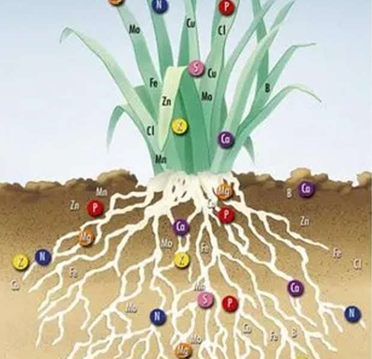
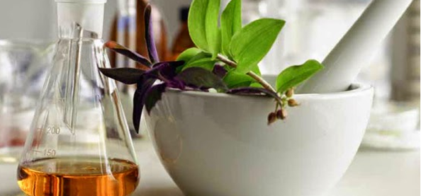

Fotossíntese
Metabolismo secundário
Comunicação química
Simbiose química
Fitoquímica e medicina
A fotossíntese é um processo biológico que ocorre em plantas, algas e algumas bactérias, onde a energia da luz solar é usada para transformar dióxido de carbono e água em glicose (um açúcar) e oxigênio.
A fotossíntese é essencial para a vida na Terra, pois é a principal fonte de oxigênio no ar e a base da cadeia alimentar, fornecendo energia para todos os seres vivos, direta ou indiretamente.
Estudar a química das plantas é importante porque permite entender as reações químicas que ocorrem em seu interior, a função dos elementos químicos no crescimento e desenvolvimento vegetal, e o papel das plantas na produção de alimentos, medicamentos e outros produtos essenciais. Esse conhecimento também contribui para melhorar práticas agrícolas, aumentar a produtividade, reduzir o uso de defensivos químicos e preservar o meio ambiente, além de apoiar o desenvolvimento de tecnologias sustentáveis nas áreas de saúde, indústria e agricultura.

A fitoquímica é o estudo da química das plantas, focando nos compostos que elas produzem, especialmente os metabólitos secundários. Estes metabólitos, como flavonoides e alcaloides,

As plantas precisam de elementos químicos específicos para se desenvolverem, absorvendo-os do solo ou do ar. A química ajuda a entender como esses elementos são absorvidos, como são usados na síntese de compostos orgânicos e como a falta ou excesso de certos elementos pode afetar o crescimento da planta.
Em química, o termo "simbiose" foi emprestado da biologia para descrever a influência mútua de dois ou mais ligantes em um complexo metálico, onde a presença de um ligante "duro" (ligante que interage fortemente com cátions duros) predispondo o complexo a ligar outro ligante "duro" em vez de um "macio" (ligante que interage mais fracamente com cátions duros). Este fenômeno é o oposto da antissimbiose, onde um ligante "duro" pode dificultar a ligação de outro ligante "duro".
podem ter propriedades medicinais e são importantes para a medicina, incluindo a fitoterapia, que usa plantas medicinais para tratamento.
Nesta Videoaula eu falo sobre O QUE É FOTOSSÍNTESE E COMO ACONTECE? Essa aula serve para todos os estudantes.
Aula sobre metabolismo secundário, parte 1 de 4: Introdução ao metabolismo secundário Prof. Dr. Marcelo Lattarulo Campos.
Pesquisadores descobrem que plantas podem comunicar entre si em situações de perigo. Entenda como isso funciona e como previne problemas ambientais.
A aula de hoje é uma Aula interdisciplinar, nela vamos conversar um pouco sobre assuntos que em geral vemos separadamente em geografia, biologia e química.